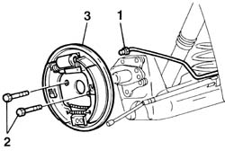
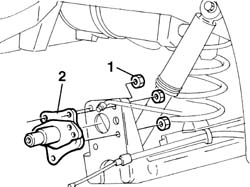

4450D14 hub axle pillar of one rear wheel, l/h or r/h - r+r with hub removed - includes bush replacement if necessary
- Path
- Procedures > 44 SUSPENSION AND WHEELS > 4450 HUBS AND WHEELS > 4450D REAR WHEEL HUBS > 4450D14 hub axle pillar of one rear wheel, l/h or r/h - r+r with hub removed - includes bush replacement if necessary
- Kind
- repair procedure (removal / refitting; the operation number is the code)
- Applies to
- all engines; all production periods
- Interactive page
- https://sloeber94.github.io/elrnDB-fPnd/en/#/2752840
Applies to: all engines; all production periods
 Removing
Removing
 Refitting
Refitting1. Undo the connector and disconnect the rear brake rigid pipe on the cylinder.
2. Undo the retaining bolts.
3. Remove the rear drum brake assembly.

Applies to: all engines; all production periods
1. Unscrew the retaining nuts.
2. Remove the stub axle for the rear wheel hub from the rear suspension.

Applies to: all engines; all production periods
Refitting
RemovingFit the stub axle for the suspension wheel hub.
Tighten the retaining nuts to torque.
 | Fastening | Component | Ø | Value (daNm) |
|---|---|---|---|---|
- | Nut | REAR KNUCKLE | M10 x 1.25 | 6.7 |
Connect the rear brake rigid pipe to the cylinder and tighten the connector to torque.
| Fastening | Component | Ø | Value (daNm) |
|---|---|---|---|---|
- | Connector | BRAKING SYSTEM FITTING/S | M10 | 1.6 |
Fit the rear brake assembly and tighten the reataining bolts.